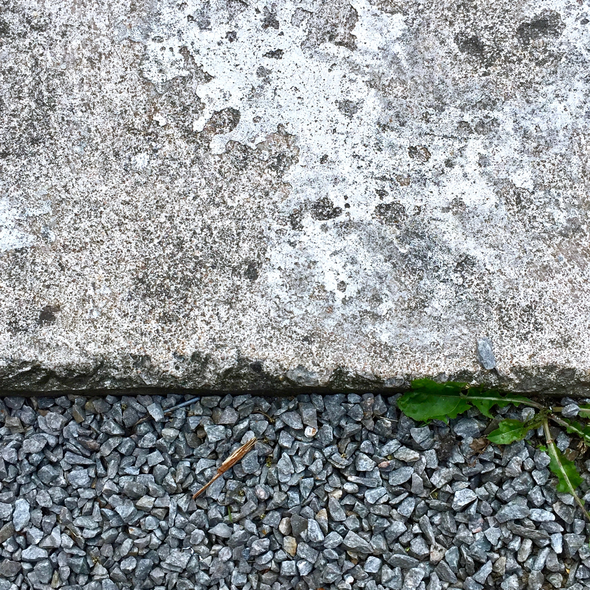
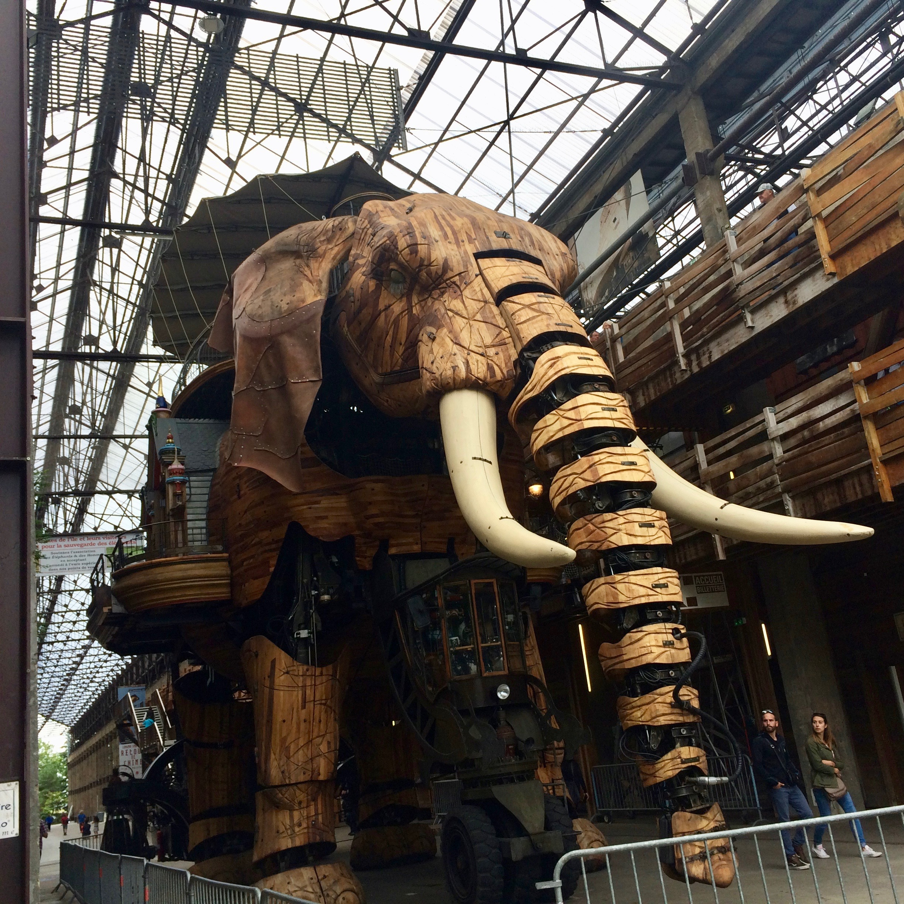
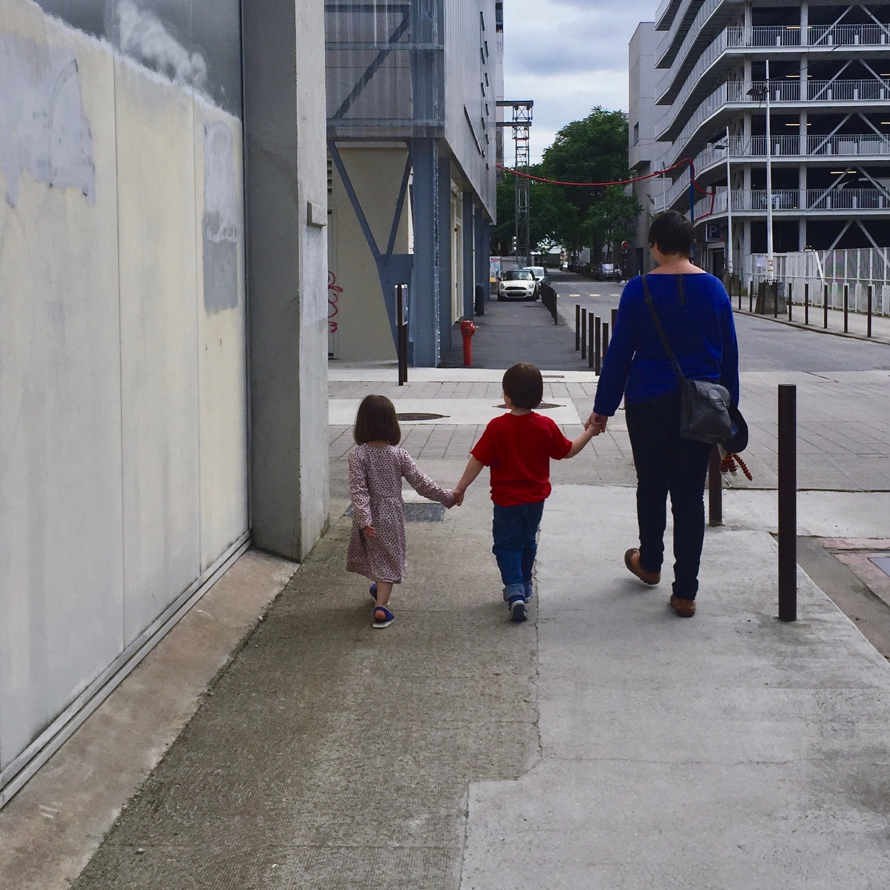
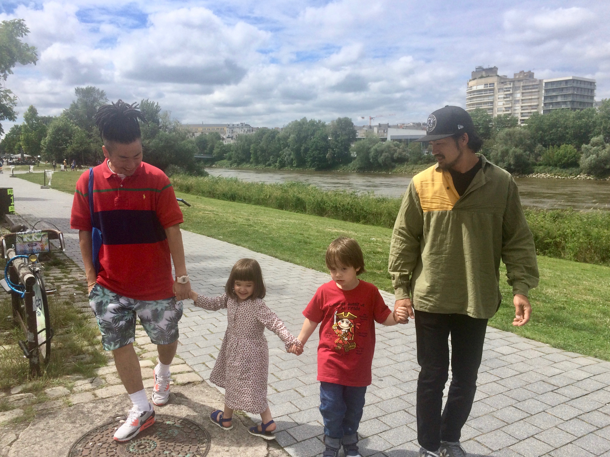

Balades du week-end (samedi)

Le problème des balades en ville, c’est qu’on sait quand elles commencent, mais on est jamais bien sûr de quand elles finissent …
Le samedi, on est d’abord partis pour une petite balade en ville. Puis Johann a voulu aller voir l’Elephant.
Mais on est arrivé en plein repos de la bestiole et on a enchainé avec les trampolines de la lune.


Et après quelques saut, il a bien fallu aller déjeuner. Direction le poulet—patates de la Cantine du Voyage.
Sur la route, on a rencontré une vieille connaissance, Ronan et sa famille.
Eux—mêmes rejoignaient des amis à eux, Renaud et sa femme, un couple franco—japonais, parents de la petite Ako.
Et nous voila retrouvés à faire découvrir l’île de Nantes à cette petite famille et à leurs amis japonais.

Johann s’est bien entendu avec la petite Ako, malgré quelques petites tensions liées à la fatigue.
